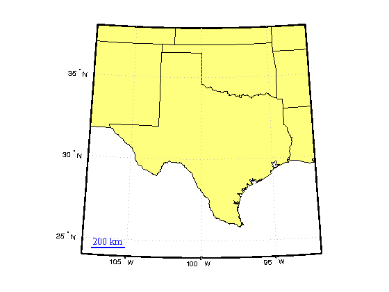
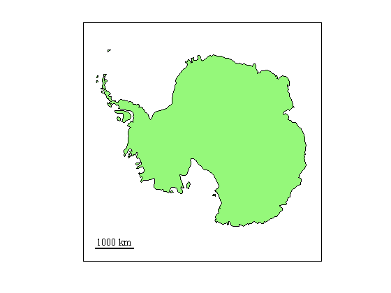
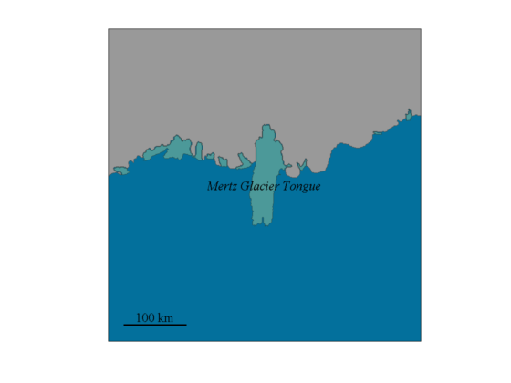

scalebar
SCALEBAR places a graphical reference scale on a map. This function was designed as a simpler alternative to the scaleruler function.
This function requires Matlab's Mapping Toolbox.
Contents
Syntax
scalebar
scalebar('Length',LengthInKilometers)
scalebar('Location','LocationOnMap')
scalebar('Orientation','VerticalOrHorizontal')
scalebar('TextProperty',TextValue)
scalebar('LineProperty',LineValue)
h = scalebar(...)Description
scalebar places a 100 km graphical reference scale at the lower left-hand corner of a map.
scalebar('Length',LengthInKilometers) specifies the length of the scalebar. Default length is 100 km. Talk about a scalar value, am I right?
scalebar('Location','LocationOnMap') specifies location of the scalebar on the map. Location can be
- 'southwest' (lower left) {default}
- 'northwest' (upper left)
- 'northeast' (upper right)
- 'southeast' (lower right)
scalebar('Orientation','VerticalOrHorizontal') specifies a 'vertical' or 'horizontal' scalebar. Default value is 'horizontal'.
scalebar('TextProperty',TextValue) specifies properties of text.
scalebar('LineProperty',LineValue) specifies properties of the reference scale line.
h = scalebar(...) returns a handle for the scalebar.
Example 1: Texas
figure; usamap('texas') states = shaperead('usastatelo.shp','UseGeoCoords',true); geoshow(states, 'DisplayType', 'polygon') scalebar('length',200,'color','b')
Example 2: Antarctica
This example requires Antarctic Mapping Tools.
figure load coast antmap patchm(lat,long,[.588 .976 .482]) scalebar('length',1000)
Example 3: Mertz Glacier Tongue
This example requires the Bedmap2 Toolbox for Matlab.
figure bedmap2 'patchgl' bedmap2('patchshelves','oceancolor',[0.0118 0.4431 0.6118]) bedmap2_zoom 'Mertz Glacier Tongue' scarlabel('Mertz Glacier Tongue','fontangle','italic') scalebar
Author Info.
This function was created by Chad A. Greene of the University of Texas Institute for Geophysics (UTIG) in 2013. This function was originally designed for the Bedmap2 Toolbox for Matlab, but has been slightly updated for inclusion in the Antarctic Mapping Tools package. Although this function was designed for Antarctic maps, it should work for other maps as well.